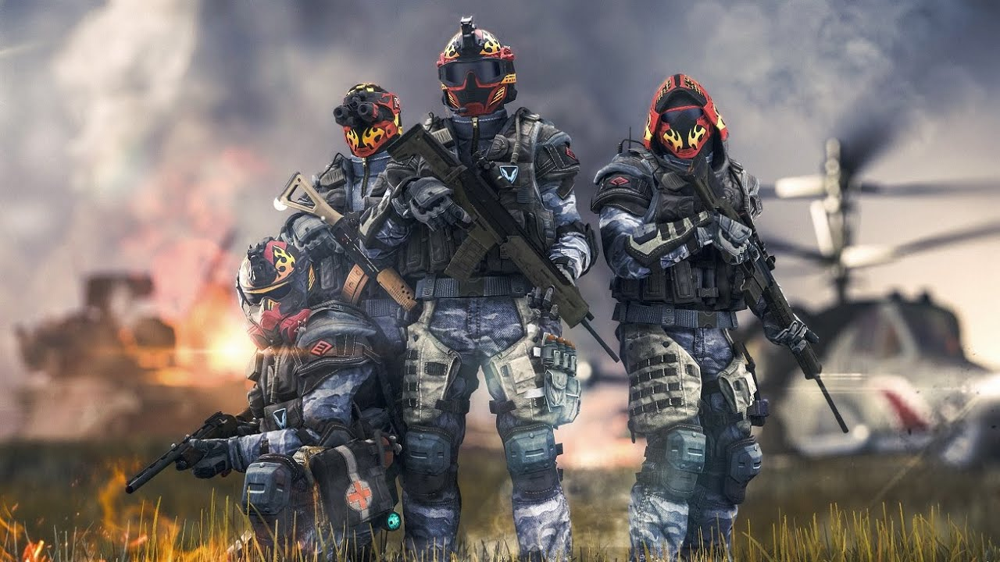
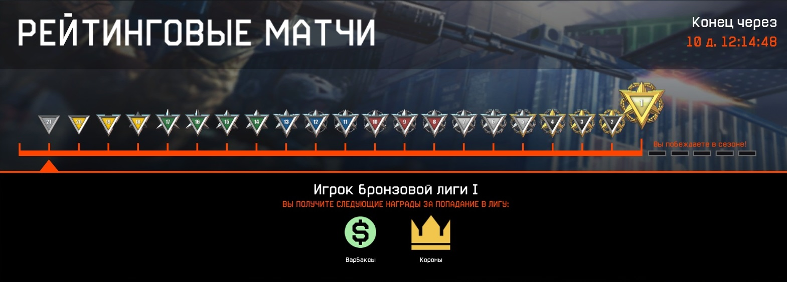

Режим рейтинговых PvP-матчей позволяет каждому игроку проверить свои боевые навыки и подтвердить своё мастерство. Доступ к рейтинговым матчам открывается с 26-го ранга.
Матчи проводятся в PvP-режимах «Подрыв» и «Блиц» на случайной карте между двумя командами из пяти игроков каждая. В комнатах осуществляется автобаланс команд, лобби комнаты отсутствует. Исключение игроков во время матча невозможно. Игроку, покинувшему сражение, зачисляется поражение в матче, при этом матч остаётся рейтинговым. В случае «вылета» из боя при повторном заходе в игру выбывшему будет отправлено приглашение вернуться в бой, если он ещё не был завершён.
О РЕЙТИНГОВЫХ МАТЧАХ
Система рейтинговых матчей включает в себя 21 лигу. Главная суть РМ является неизменной: вам предстоит пробиваться к первой лиге, а в случае поражения в серии матчей, вы будете откатываться на одну лигу назад. Сражаясь внутри каждой лиги, вам предстоит совершить ряд побед вместо одной. Чем выше лига, тем больше упорства придется проявить. В тоже время, если вы потерпели поражение, вы не сразу потеряете прогресс: у вас будет шанс исправиться, выиграв серию матчей. Если вы не воспользуетесь данной возможностью и продолжите проигрывать, то откатитесь назад в предыдущую лигу.
Чтобы повысить значимость командного взаимодействия и сделать сражения более тактическими, в данном игровом режиме введены ограничения на использование некоторого оружия и обмундирования, а также отключен класс СЭД. Разрешенные в РМ предметы отмечены на складе специальным знаком. 
Поиск рейтинговых игр может осуществляться как в одиночку, так и с друзьями или соклановцами. Участники разных лиг могут играть вместе — поиск в этом случае будет проходить в соответствии с самым высоким рангом внутри группы. Ранг игрока в рейтинговых матчах не влияет на поиск матчей в «Быстрой игре».
Голосовая связь сделает коммуникацию между игроками гораздо удобнее, что несомненно поможет вам добиться успеха в высших лигах.
СЕЗОНЫ РЕЙТИНГОВЫХ ИГР

В Warface стартуют сезоны рейтинговых игр! Участвуя в них, вы сможете заработать не только игровую валюту (варбаксы и короны), но и уникальные награды — внутриигровые достижения и оружейные камуфляжи, а также дополнительные награды.
Сезоны будут запускаться и завершаться один за другим. На старте нового сезона предыдущий прогресс каждый раз будет обнуляться — все игроки начинают борьбу в одинаковых условиях. Участников рейтинговых матчей ждет два типа наград: текущие и сезонные. Чем выше лига, в которой находится участник, тем лучше награда.